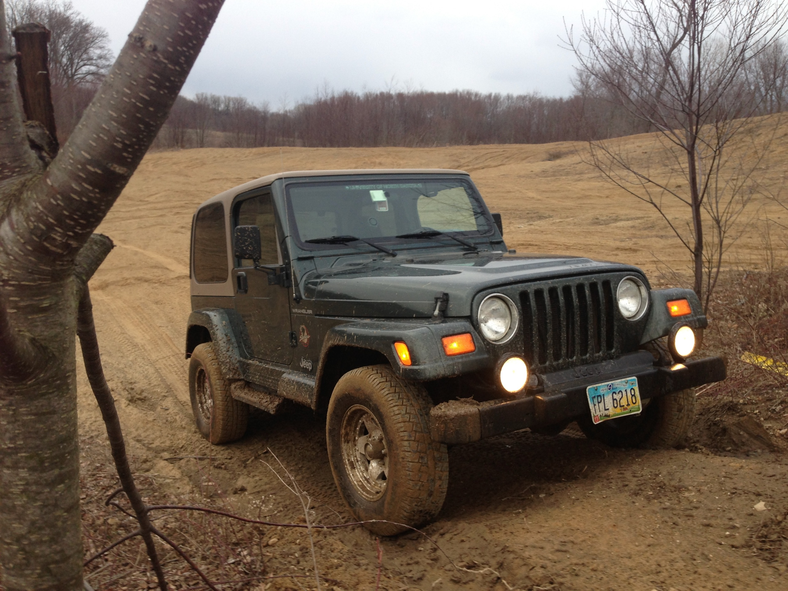
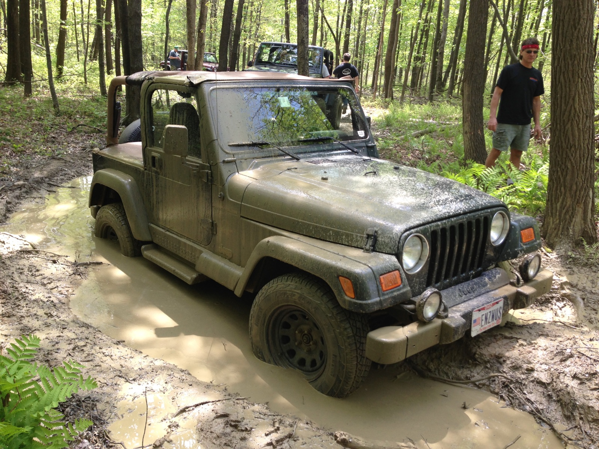
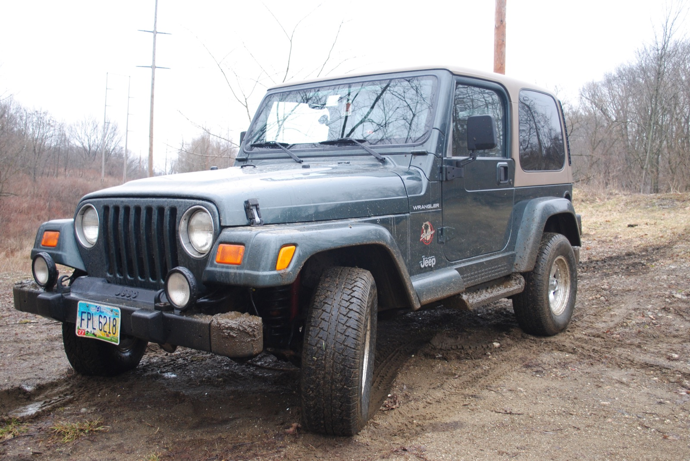
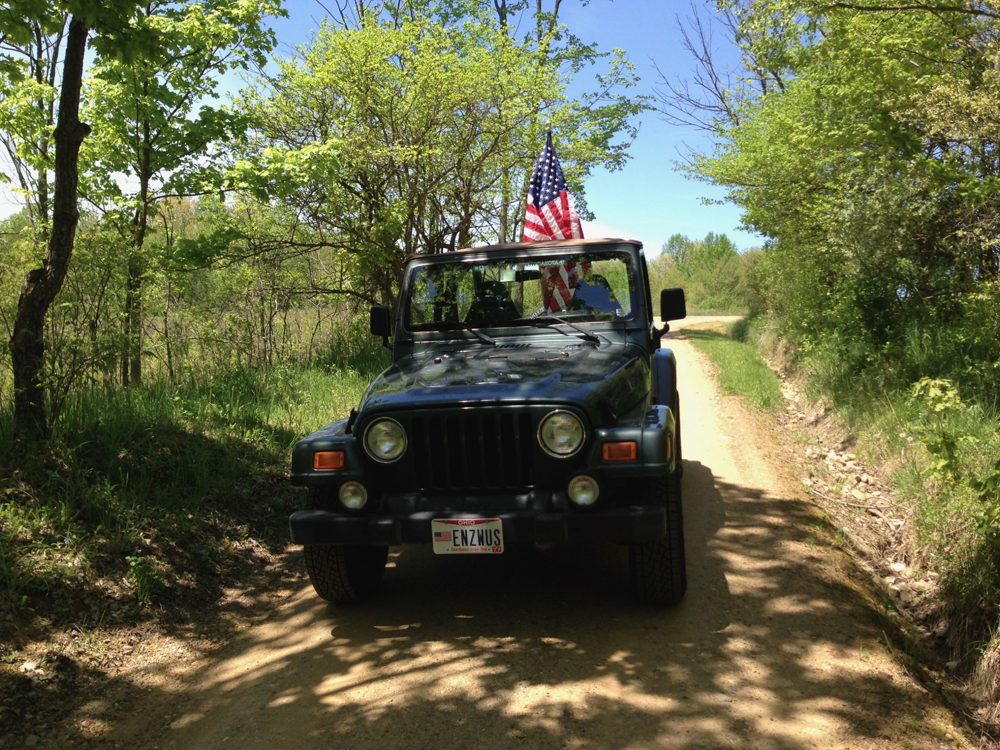

Audio
- Pioneer DEH-P8400BH head unit (opens in new tab)
- Bluetooth and modern media connectivity
New on YouTube: watch the latest trail footage (opens in new tab)

This 2002 Wrangler Sahara balanced the iconic simplicity of the TJ platform with thoughtful accessories and extensive mechanical renewal.
Purchased on July 12, 2012, the green-and-tan Jeep was made more capable, reliable and enjoyable without losing its original character. It served as both a daily driver and a weekend trail rig before being sold on June 7, 2013.
Everyday simplicity.
Weekend capability.
A focused selection of trail, open-air and in-cab equipment made the short-wheelbase Sahara more versatile without overcomplicating it.
Linked component names open the manufacturer's website in a new tab.

The coordinated Bestop components made it easy to adapt the Wrangler to changing weather and different kinds of trips while retaining the open-air experience that defines a TJ.
The most important work happened beneath the surface. Known TJ wear items and previous repair issues were addressed proactively to create a dependable, well-sorted Jeep.
New radiator and oil pan, plus replacement spark plugs.
New front stabilizer links and shocks, along with a replacement steering box.
New front axle U-joints, wheel bearings and muffler. The damaged 4WD transfer-case shift mechanism was repaired after it had been crushed.

Ownership summary: Rather than simply replacing worn parts, this build combined tasteful accessories with preventative restoration to preserve a capable classic Wrangler.
A compact, open-air Jeep at home on wooded trails, muddy two-tracks and everyday roads.


Every documented addition and repair, grouped by system. Linked accessories open an official manufacturer page; maintenance items are identified as service work.